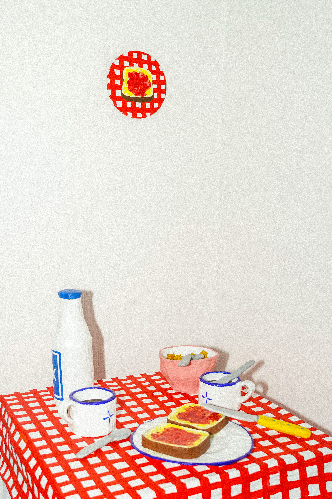
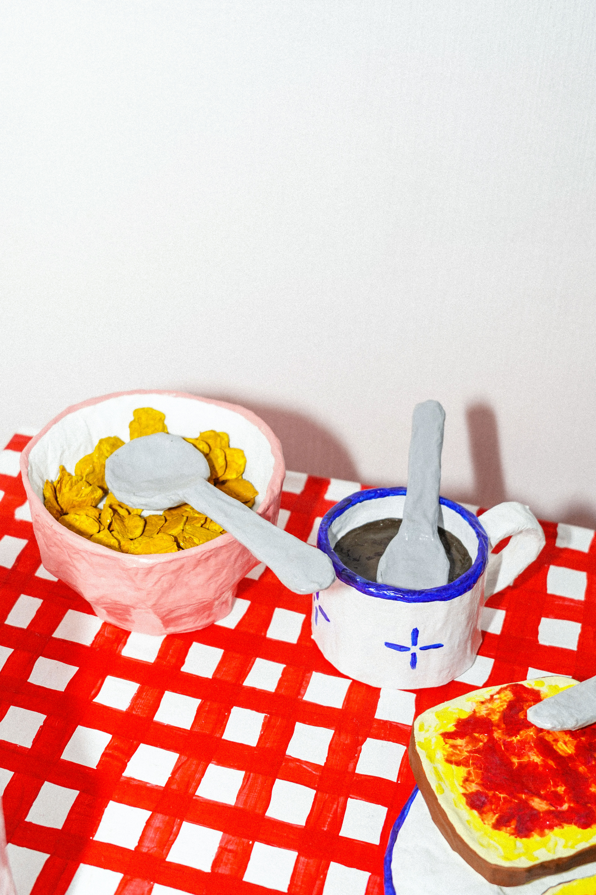

Petit déjeuneR explores the small rituals that shape our everyday lives. A table, a cup of coffee, a slice of bread: familiar objects become the starting point for a collection of memories. The installation takes inspiration from the gestures and habits we repeat every morning, often without even noticing them. Through papier-mâché, ordinary objects are transformed into colourful sculptures, somewhere between the familiar and the imaginary. They evoke moments spent alone, with family or around a shared table. Each object carries a memory, but also leaves room for the viewer's own experiences and associations. What seems ordinary at first becomes a little more surprising when looked at from another perspective. Petit déjeuner is an invitation to pause, remember and rediscover the poetry of everyday life.

